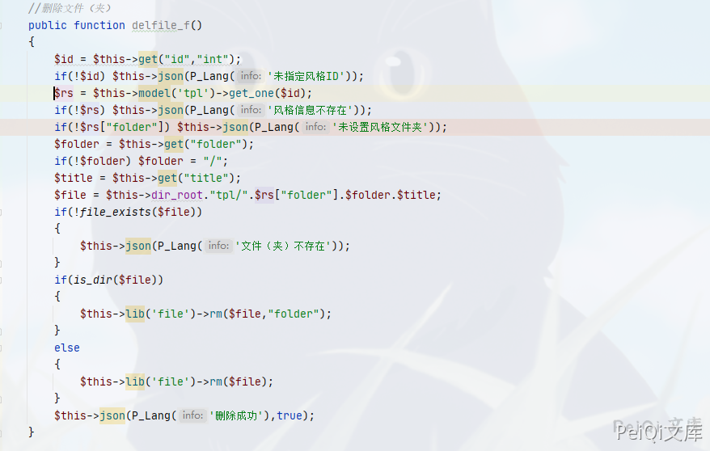
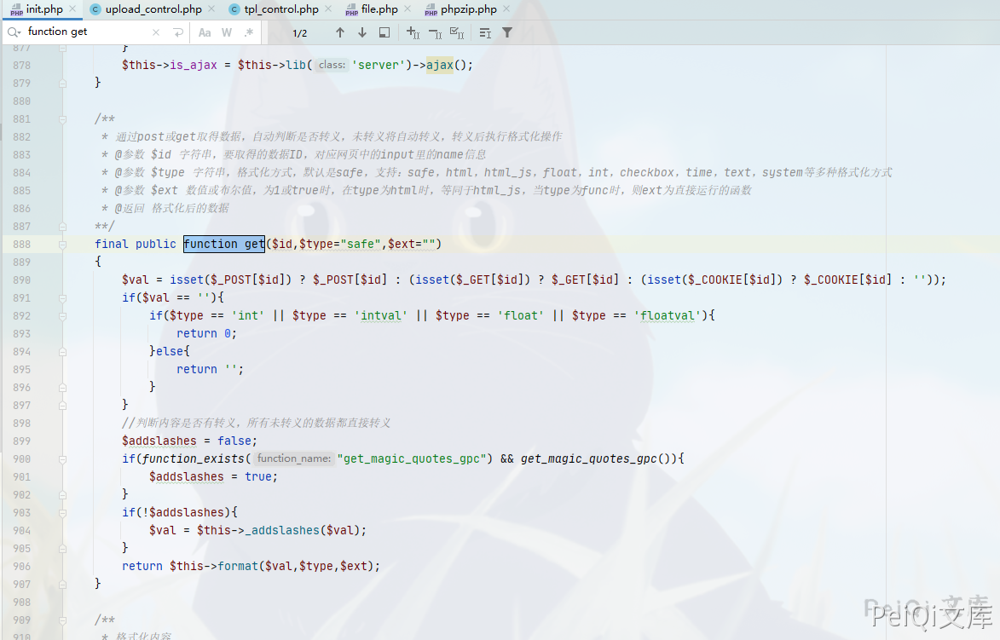

OKLite 1.2.25 后台风格模块 任意文件删除 CVE-2019-16132¶
漏洞描述¶
OKLite 1.2.25 后台风格模块存在 对危险字符未过滤，导致可以删除任意目录和文件
漏洞影响¶
OKLite 1.2.25
漏洞复现¶
出现漏洞的函数在文件 framework/admin/tpl_control.php 中的 delfile_f() 函数

这里删除文件主要调用了 rm函数, 位置在 framework/libs/file.php
/**
* 删除操作，请一定要小心，在程序中最好严格一些，不然有可能将整个目录删掉
* @参数 $del 要删除的文件或文件夹
* @参数 $type 仅支持file和folder，为file时仅删除$del文件，如果$del为文件夹，表示删除其下面的文件。为folder时，表示删除$del这个文件，如果为文件夹，表示删除此文件夹及子项
* @返回 true/false
**/
public function rm($del,$type="file")
{
if(!file_exists($del)){
return false;
}
if(is_file($del)){
unlink($del);
return true;
}
$array = $this->_dir_list($del);
if(!$array){
if($type == 'folder'){
rmdir($del);
}
return true;
}
foreach($array as $key=>$value){
if(file_exists($value)){
if(is_dir($value)){
$this->rm($value,$type);
}else{
unlink($value);
}
}
}
if($type == "folder"){
rmdir($del);
}
return true;
}
这里对传入的参数遍历，获得的文件名或文件夹进行删除
回过头看 调用get函数传入参数时是否有对 ../ 的过滤

可以看到参数我们是可控的，使用这里的漏洞进行任意文件删除
抓包修改成功删除文件